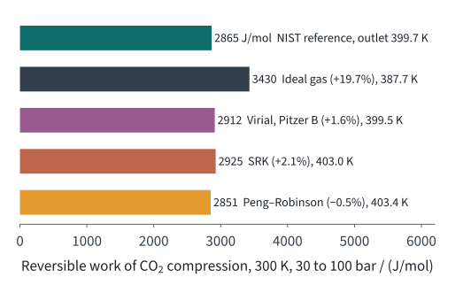
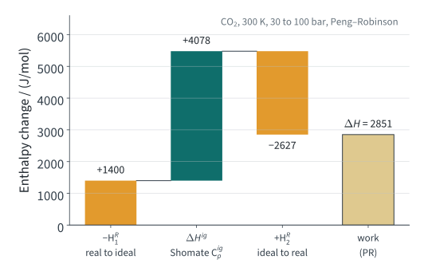
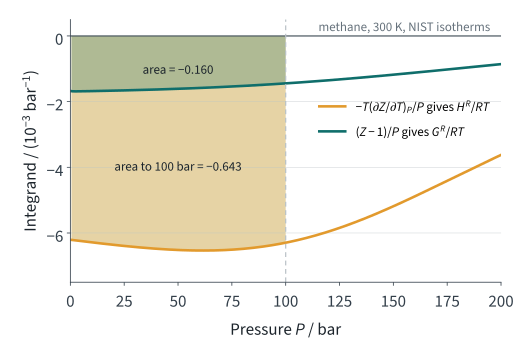
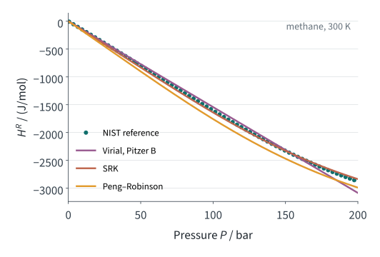
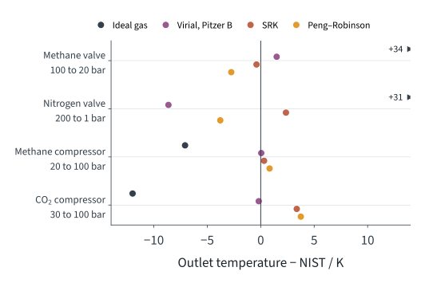
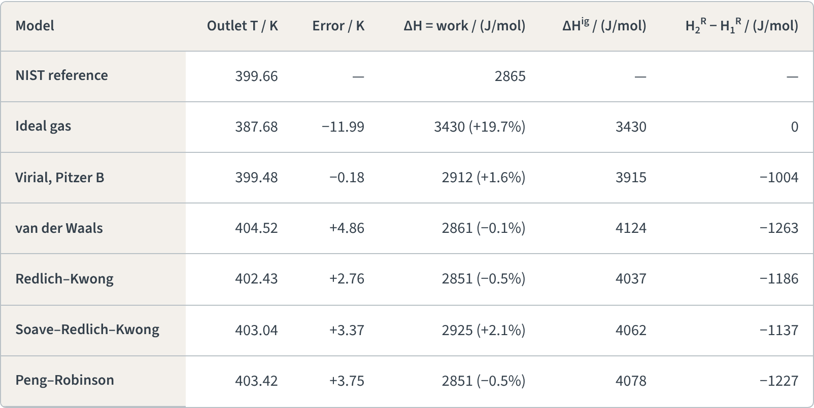

Session P3 of 7 · before the midterm · 180 minutes
Before the midterm · 7 sessions P1 · Framework P2 · PVT and equations of state P3 · Residual properties P4 · Pure-component equilibrium and fugacity P5 · Mixtures P6 · Excess properties and activity P7 · Choosing a property model
After the midterm · 7 sessions 1 · VLE and flash 2 · Experimental VLE and consistency 3 · Liquid stability and LLE 4 · Solids and adsorption 5 · Chemical equilibrium 6 · Electrochemical equilibrium 7 · Choosing a model from evidence
P2 gave Z from an equation of state, with its error. An energy balance needs H and S. Today: the residual properties HR, SR and GR, which carry the real-fluid part of every enthalpy and entropy change, and the GR that becomes the fugacity in P4.

CO₂ at 300 K is compressed from 30 to 100 bar, reversibly and adiabatically, as in a capture and storage train.
The reference work is 2865 J/mol. The ideal gas asks for 3430 J/mol, 20% more, and predicts the wrong outlet temperature.
Peng–Robinson gives 2851 J/mol. The difference is two residual enthalpies.
By the end of today you can compute each bar from Z and Cpig.
NIST Chemistry WebBook, SRD 69 (Span and Wagner CO₂ equation); Shomate Cpig from the NIST gas-phase data. Lab P3.
Where you show it
0–30 Essential concepts residuals from PVT, virial, cubics
30–40 Activity 1 virial residuals by hand
40–60 Demo Lab P3
60–70 Break
70–140 Activity 2 · pair investigation two valves, two compressors
140–180 Discussion and exit ticket answer the session question
Session question How do we get the enthalpy and entropy changes of a real fluid from an equation of state, and how much does the choice of equation change a process energy balance?
Before class · 20 min Read the Session P3 pre-class note and answer its three questions.
After class · 40 min Finish Lab P3: four processes and five states, then A–C in the Graduate view. Submit the study file with your name and ID.
Studying on your own? Follow the same order. Turn on narration or captions at the bottom left, and pause at each activity slide.

At the same T and P:
M^R=M(T,P)-M^{\text{ig}}(T,P)
for M = V, U, H, S or G.
Any change follows a path through the ideal gas:
\Delta H=H_2^R-H_1^R+\int_{T_1}^{T_2}C_p^{\text{ig}}\,dT
\Delta S=S_2^R-S_1^R+\int_{T_1}^{T_2}\frac{C_p^{\text{ig}}}{T}\,dT-R\ln\frac{P_2}{P_1}
The ideal-gas step needs Cpig(T) only. The residual steps need only PVT data.
At constant T, from dG = V dP and the Gibbs–Helmholtz relation:
\frac{G^R}{RT}=\int_0^P(Z-1)\frac{dP}{P}
\frac{H^R}{RT}=-T\int_0^P\Big(\frac{\partial Z}{\partial T}\Big)_P\frac{dP}{P}
\frac{S^R}{R}=\frac{H^R}{RT}-\frac{G^R}{RT}

Methane, 300 K, 100 bar: integrating the NIST Z gives HR/RT = −0.64295; the tabulated H gives −0.64291.
With Z = 1 + BP/RT, the integrals are exact:
\frac{G^R}{RT}=\frac{BP}{RT}\qquad \frac{H^R}{RT}=\frac{P}{R}\Big(\frac{B}{T}-\frac{dB}{dT}\Big)
\frac{S^R}{R}=-\frac{P}{R}\frac{dB}{dT}
Pitzer: dB0/dTr = 0.675/Tr2.6, dB1/dTr = 0.722/Tr5.2.
GR needs B; HR and SR need dB/dT, which no measurement at one temperature gives.
B < 0 and dB/dT > 0 for most gases below the Boyle temperature, so HR < 0: the real gas has less enthalpy than the ideal gas at the same T and P.
The virial residuals carry the same density limit as Z in P2: dense fluids and liquids are out of range.
With β = bP/RT, q = a(T)/(bRT), I = ln[(Z + σβ)/(Z + εβ)]/(σ − ε):
\frac{G^R}{RT}=Z-1-\ln(Z-\beta)-qI
\frac{H^R}{RT}=Z-1+\Big[\frac{d\ln\alpha}{d\ln T_r}-1\Big]qI
\frac{S^R}{R}=\ln(Z-\beta)+\frac{d\ln\alpha}{d\ln T_r}\,qI
van der Waals: I = β/Z. d ln α/d ln Tr: vdW 0; RK −½; SRK, PR −m√Tr/[1 + m(1 − √Tr)]. Z uses a(T) at one T; HR and SR also use da/dT. α(Tr, ω) was fitted to vapor pressures, never to enthalpies.
Methane, 300 K, 100 bar · error against NIST
| Z | HR | SR | |
|---|---|---|---|
| NIST | 0.8556 | −1604 J/mol | −4.020 J/(mol K) |
| SRK | +1.8% | −2.2% | −4.8% |
| PR | −2.5% | −9.6% | −5.5% |
Shomate form (NIST WebBook), t = T/1000:
C_p^{\text{ig}}=A+Bt+Ct^2+Dt^3+E/t^2
Hig and S°ig are its integrals; at pressure P:
S^{\text{ig}}(T,P)=S^{\circ}(T)-R\ln\frac{P}{1\,\text{bar}}
Cpig / (J/(mol K)): Shomate against the NIST 0.001 bar isobar
| 250 K | 300 K | 400 K | |
|---|---|---|---|
| methane | 34.71 / 34.27 | 35.71 / 35.78 | 40.50 / 40.61 |
| CO₂ | 34.63 / 34.84 | 37.22 / 37.23 | 41.34 / 41.33 |
| nitrogen | 29.11 / 29.11 | 29.13 / 29.13 | 29.25 / 29.17 |
The methane and CO₂ fits start at 298 K. At 250 K they are extrapolated, and methane is 1.3% high.

Methane, 300 K SRK and the virial equation follow the reference HR. PR is about 10% too negative, the same bias as its B in P2.
CO₂, 300 K, 30 bar PR HR = −1400 J/mol, reference −1398. SRK −1361.
Liquid CO₂, 100 bar PR Z +5.5%, HR +2.7%. The virial equation: +62%.
The best model changes with the property and the state. P2 tested Z; an energy balance tests HR and SR.

Valve, ΔH = 0: ΔHig = −(H₂R − H₁R). The ideal gas cannot cool at all.
Compressor, ΔS = 0: the outlet T comes from S; the work is ΔH.
Methane valve, 100 → 20 bar NIST 265.6 K; SRK 265.2; PR 262.9; virial 267.1.
CO₂ compressor The ideal gas is 12 K low and its work 20% high.
Liquid CO₂, 300 K, 100 bar · NIST
| kJ/mol | |
|---|---|
| HR | −10.85 |
| TSR | −9.07 |
| GR = HR − TSR | −1.78 |
PR: HR −10.56, GR −1.82.
Condensation releases energy (HR < 0) and orders the molecules (SR < 0). In G the two nearly cancel.
That cancellation is why a liquid can coexist with its vapor: at Psat the two phases have equal GR (P4).
For a pure fluid GR/RT = ln φ, the fugacity coefficient. A 3% error in HR can be a much larger relative error in GR.
Activity 1 · 10 minutes · alone, then with a partner
Methane at 300 K and 20 bar: Tc = 190.564 K, Pc = 45.992 bar, ω = 0.0114. With the Pitzer correlation, compute B and dB/dT, then HR, SR and GR. Compare with the reference: HR = −314 J/mol, SR = −0.766 J/(mol K).
Work in SI: B in m³/mol, P in Pa. Check that GR = HR − TSR.
On your own: pause here and write your answer. In place of a partner, compare it with the next slide and write one sentence on any difference and its cause.
Tr = 1.5743: B⁰ = −0.1212, B¹ = 0.1134, B = −41.3 cm³/mol
dB⁰/dTr = 0.2075, dB¹/dTr = 0.0682
dB/dT = (R/Pc)(0.2075 + 0.0114 × 0.0682) = 0.376 cm³/(mol K)
Residuals at 20 bar
| virial | NIST | |
|---|---|---|
| HR = P(B − T dB/dT) / (J/mol) | −308.5 | −314 |
| SR = −P dB/dT / (J/(mol K)) | −0.753 | −0.766 |
| GR = BP / (J/mol) | −82.6 | −84 |
At 20 bar the virial equation is within 2%: this is its range.

Lab P3 should report CO₂ compressor: NIST 399.66 K, 2865 J/mol · ideal gas 387.68 K, 3430 J/mol · PR 403.42 K, 2851 J/mol · methane valve: NIST 265.63 K, PR 262.87 K
Sign of the residual. MR = M − Mig. For an attracting gas HR < 0. Leaving the real fluid adds −H₁R.
Dropping the pressure term of Sig. Sig(T, P) = S°(T) − R ln(P/P°). Without it the CO₂ compressor outlet comes out at 348 K instead of 403 K (PR).
HR with a constant a. For SRK and PR, a depends on T. With PR the d ln α/d ln Tr term is 27% of HR for methane at 100 bar and 50% for nitrogen at 200 bar.
Using Cpig outside its range. The Shomate fits for methane and CO₂ start at 298 K. Check the range before a valve outlet at 265 K.
Next Activity 2: a pair investigation in Lab P3, 70 minutes.
Before you leave your seat, check that Lab P3 opens on your device and that the methane valve is saved.
Activity 2 · 70 minutes · in pairs: one drives Lab P3, one checks by hand, then swap
20 min · the processes Calculate the four processes. For each, record the outlet of the ideal gas, the virial equation, SRK and PR, and the work of the compressors.
15 min · the states Residuals at the five states. Find one state where the model best for Z is not the best for HR (Lab P3 C).
20 min · sources of error Lab P3 A: residuals from the NIST isotherms. Lab P3 B: how much of each outlet error comes from Cpig?
15 min · explain Two sentences with numbers answering the session question. Download the study file with your names and IDs.
On your own: do both roles yourself: work in Lab P3, then check one residual by hand. Pause the slides while you work; the next slide lists what to hand in.
Graduate extension Lab P3 E: write the CO₂ compressor calculation with an AI assistant and check it against the lab.
Check your results · outlet temperature / K
| Process | NIST | ideal | virial | SRK | PR |
|---|---|---|---|---|---|
| methane valve | 265.6 | 300.0 | 267.1 | 265.2 | 262.9 |
| nitrogen valve | 269.2 | 300.0 | 260.6 | 271.6 | 265.4 |
| methane compressor | 432.1 | 425.0 | 432.2 | 432.4 | 433.0 |
| CO₂ compressor | 399.7 | 387.7 | 399.5 | 403.0 | 403.4 |
Work, CO₂: NIST 2865, ideal 3430, PR 2851 J/mol. Cpig moves any outlet by 0.4 K or less.
Discuss in pairs, then with the class. On your own: write two or three sentences for each question.
Definition MR = M − Mig at the same T and P. ΔM = M₂R − M₁R + ΔMig, with ΔMig from Cpig(T).
Sources GR from Z alone; HR and SR also need (∂Z/∂T)P: dB/dT for the virial equation, da/dT for a cubic.
Evidence Test the property the balance uses. PR: Z of methane to 2.5%, HR to 10%; outlets within 4 K; the ideal gas 7–34 K.
Session question: H and S of a real fluid are ideal-gas changes plus residuals from the equation of state. For the CO₂ compressor the residuals take the work from 3430 to 2851 J/mol (reference 2865).
Next session P4: GR becomes the fugacity, and equal fugacity gives the vapor pressure.
Exit ticket and feedback · alone · 5 minutes · anonymous
An ideal-gas calculation overestimates the work of the CO₂ compressor by 20%. Write the work as an ideal-gas term plus residuals, and say why the residual correction lowers the work.
Scan the code or open the link. The same form asks three short questions about today: pace, confidence and whether the lab worked.
No name or student ID is recorded. Wait for “Response received.”
Hand in · this week Your Lab P3 study file with the four processes, the five states, A–C, name and student ID. Upload it to myCourseVille, in the assignment for that lab.
Prepare · Session P4 Read the Session P4 pre-class note. About 20 minutes.
Optional · graduate Lab P3 E: the CO₂ compressor with an AI-written Peng–Robinson code, checked against the lab.
Open Lab P3 in the Graduate view →
Starts at 4. Investigate what the residuals can support. A: Integrate the isotherms. B: Split the process errors. C: Rank the models.